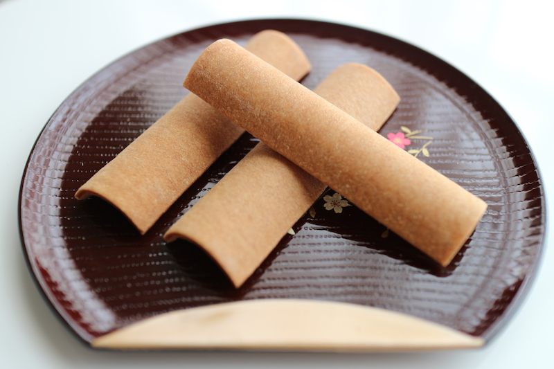

京都のおすすめグルメ
八ツ橋

米粉・砂糖・ニッキ（肉桂、シナモン）を混ぜて蒸した生地を、薄く伸ばして焼き上げた堅焼き煎餅の一種です。形は箏または橋を模しているとされ、長軸方向に凸になった湾曲した長方形になっています。
生地を焼かずに切っただけの「生八ツ橋」、さらに派生して生八ツ橋でつぶ餡などを包んだ商品も存在します。生八ツ橋の登場は1960年代と比較的新しく、現代では特に餡入りのものは創意工夫が凝らされ、生地に抹茶やごま・餡に果物やチョコレートを用いるものも生み出され、八ツ橋よりも生八ツ橋の方が好まれる傾向にあります。餡入り生八ツ橋を単に「八ツ橋」と呼ぶことも増えており、区別のために焼いた八ツ橋を「焼き八ツ橋」とする造語も生まれている。
井筒八ツ橋本舗 夕子

水上 勉の代表作「五番町夕霧楼」の主人公・夕子に因んで名付けられた叙情銘菓です。
もっちりとした「生八ッ橋」としっとりとした「つぶあん」がよく合う、京都ゆかりのおみやげです。
いつも母の実家に行った帰りには、京都駅で夕子を買っていた思い出があります。
幼い頃は、八ツ橋の硬さが苦手だった為、やわらかい生八ツ橋の方が馴染みがありました。
みなさんも八ツ橋といえば生八ツ橋を思い浮かべる方が多いのではないでしょうか？
今では定番のニッキ（シナモン）や抹茶の他に、チョコレートや季節限定で、柚子、苺など様々な種類の生八ツ橋が販売されています。特にチョコレート味は洋菓子のようで小さいお子様で食べやすいのでおすすめです。
今回ご紹介したグルメはお取り寄せ可能です！
ご注文はショッピングページをご覧ください！